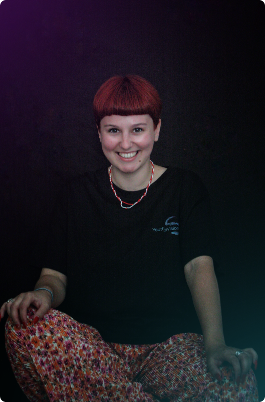

Beatrice Istihie a început voluntariatul acum mult timp, participând la proiecte
precum Sibiu Jazz Festival, Maratonul Internațional Sibiu, Festivalul Internațional de Teatru Sibiu sau fiind
parte din ONG-uri precum: Asociația pentru Libertate și Egalitate de Gen, Asociația Studenților în Psihologie
Sibiu și Fundația Un Copil o Speranță.
În cadrul acestor experiențe, a avut ocazia să acumuleze o mulțime de cunoștințe și să dezvolte diverse abilități.
Fotografia și arta, în general, sunt pasiuni care îi permit să captureze momente unice și să le păstreze vii în amintirea tuturor.
Face parte din echipa de PR și are rolul de Content Creator. Este aici pentru a sprijini comunitatea tinerilor să se dezvolte și să ofere noilor generații șansele la care visează.
Își dorește ca vocea tinerilor să fie auzită și să construiască o comunitate unită, unde învățăm să zburăm împreună, o comunitate plină de energie și creativitate.
În cadrul acestor experiențe, a avut ocazia să acumuleze o mulțime de cunoștințe și să dezvolte diverse abilități.
Fotografia și arta, în general, sunt pasiuni care îi permit să captureze momente unice și să le păstreze vii în amintirea tuturor.
Face parte din echipa de PR și are rolul de Content Creator. Este aici pentru a sprijini comunitatea tinerilor să se dezvolte și să ofere noilor generații șansele la care visează.
Își dorește ca vocea tinerilor să fie auzită și să construiască o comunitate unită, unde învățăm să zburăm împreună, o comunitate plină de energie și creativitate.

Olga Corburean este o fire empatică, deschisă, caldă și curioasă, aflată
constant în instanța de observator al ființei umane.
Este licențiată în psihologie, a finalizat un master cu specializarea în Psihologie clinică, consiliere psihologică și psihoterapie, iar actualmente este în proces de formare ca psihoterapeut integrativ.
Implicarea în YDV, proiect de suflet, marchează nivelul de acceptare asumată a ceea ce este, cu toate resursele sale active, pe care a ales conștient să le investească în lucrul cu tinerii, inspirată fiind de energia și curajul lor.
În calitate de Consilier Intern, prioritatea ei este asigurarea stării de bine a membrilor și a unui climat organizațional sănătos, iar, ca urmare, activitatea presupune:
ateliere de dezvoltare personală și psihoeducație, evaluare și consiliere psihologică, psihoterapie individuală sau de grup.
Este licențiată în psihologie, a finalizat un master cu specializarea în Psihologie clinică, consiliere psihologică și psihoterapie, iar actualmente este în proces de formare ca psihoterapeut integrativ.
Implicarea în YDV, proiect de suflet, marchează nivelul de acceptare asumată a ceea ce este, cu toate resursele sale active, pe care a ales conștient să le investească în lucrul cu tinerii, inspirată fiind de energia și curajul lor.
În calitate de Consilier Intern, prioritatea ei este asigurarea stării de bine a membrilor și a unui climat organizațional sănătos, iar, ca urmare, activitatea presupune:
ateliere de dezvoltare personală și psihoeducație, evaluare și consiliere psihologică, psihoterapie individuală sau de grup.
Andreea Coman este o persoană rațională, gata de acțiune și de a da tot ce
este mai bun pentru ceea ce se află în jurul ei.
Drumul său educațional s-a conturat în jurul artei, fie ea muzica sau psihologia, știință studiată în cadrul Universității "Lucian Blaga" din Sibiu, Facultatea de Științe Socio-Umane.
De-a lungul anilor de studiu, a început să iubească ONG-ul, prin activitatea pe care o desfășura alături de oamenii cu dorințe comune: să facă totul mai frumos - ÎMPREUNĂ.
A crescut în Asociația Studenților în Psihologie Sibiu, unde a coordonat Departamentul Educațional, cât și întreaga activitate a Asociației, sub funcția de Președinte.
Youth DiVision Sibiu este organizația ideală care să îndeplinească și să ofere spațiul potrivit comunității de tineret sibiene. Crescând aici, a observat o fragmentare a noastră, ca tineri, din diverse motive: ori că nu avem un spațiu al nostru de cunoaștere și socializare, formare sau distracție, ori, ca un efect a ceea ce a menționat, că decidem să plecăm din Sibiu, nefiind un oraș ofertant pentru tineri. Așa că, a decis să înființeze acest ONG, alături de prietenii și colegii ei, pentru a putea oferi generațiilor tinere toate instrumentele necesare dezvoltării personale și profesionale.
Responsabilitățile din cadrul organizației sunt cele aferente funcției de Președinte.
Drumul său educațional s-a conturat în jurul artei, fie ea muzica sau psihologia, știință studiată în cadrul Universității "Lucian Blaga" din Sibiu, Facultatea de Științe Socio-Umane.
De-a lungul anilor de studiu, a început să iubească ONG-ul, prin activitatea pe care o desfășura alături de oamenii cu dorințe comune: să facă totul mai frumos - ÎMPREUNĂ.
A crescut în Asociația Studenților în Psihologie Sibiu, unde a coordonat Departamentul Educațional, cât și întreaga activitate a Asociației, sub funcția de Președinte.
Youth DiVision Sibiu este organizația ideală care să îndeplinească și să ofere spațiul potrivit comunității de tineret sibiene. Crescând aici, a observat o fragmentare a noastră, ca tineri, din diverse motive: ori că nu avem un spațiu al nostru de cunoaștere și socializare, formare sau distracție, ori, ca un efect a ceea ce a menționat, că decidem să plecăm din Sibiu, nefiind un oraș ofertant pentru tineri. Așa că, a decis să înființeze acest ONG, alături de prietenii și colegii ei, pentru a putea oferi generațiilor tinere toate instrumentele necesare dezvoltării personale și profesionale.
Responsabilitățile din cadrul organizației sunt cele aferente funcției de Președinte.
Fabian Sas este absolvent de Psihologie și al unui program de master
în domeniul Psihologiei clinice, consilierii psihologice și psihoterapiei, un tânăr care își dorește să se
implice în comunitatea din care face parte, o persoană care e fascinată de perioada anilor ‘80-’90 și un
împătimit al cafelei.
Primul său contact cu sfera voluntariatului a avut loc pe parcursul facultății, moment în care a conștientizat cu adevărat semnificația lui „a aparține”. Tot atunci a realizat cu adevărat că se simte în largul lui interacționând cu diferite tipologii de persoane și i s-a confirmat faptul că sfera socio-umană este locul lui (și al altora).
Astăzi, își dorește să ducă pasiunea aceasta la un alt nivel și să activeze, în continuare, în frumoasa lume a organizațiilor non-guvernamentale, unde oferi și primești fără să existe vreun soi de obligație la bază.
Totodată, în cadrul Youth DiVision Sibiu este responsabil de sarcini aferente domeniului Relațiilor Publice alături de echipa sa, deci de sarcini precum stabilirea unei estetici specifice, recognoscibile, dar, de exemplu, și de crearea unui formular de înscriere ori redactarea unui comunicat de presă.
Primul său contact cu sfera voluntariatului a avut loc pe parcursul facultății, moment în care a conștientizat cu adevărat semnificația lui „a aparține”. Tot atunci a realizat cu adevărat că se simte în largul lui interacționând cu diferite tipologii de persoane și i s-a confirmat faptul că sfera socio-umană este locul lui (și al altora).
Astăzi, își dorește să ducă pasiunea aceasta la un alt nivel și să activeze, în continuare, în frumoasa lume a organizațiilor non-guvernamentale, unde oferi și primești fără să existe vreun soi de obligație la bază.
Totodată, în cadrul Youth DiVision Sibiu este responsabil de sarcini aferente domeniului Relațiilor Publice alături de echipa sa, deci de sarcini precum stabilirea unei estetici specifice, recognoscibile, dar, de exemplu, și de crearea unui formular de înscriere ori redactarea unui comunicat de presă.
Denisa Bar se consideră o persoană sinceră, excentrică și
curajoasă.
Din punct de vedere al experienței profesionale, se numără următoarele:
Marketing și Manageriere de Proiecte în cadrul Teatrului Național ,,Radu Stanca" din Sibiu, Responsabil Companii Indoor din România în cadrul Festivalului Internațional de Teatru de la Sibiu, Fondator și Vicepreședinte al Asociației Arta în Prezent.
Ceea ce o determină să facă parte din Youth DiVision Sibiu este echipa, oamenii bine intenționați cu spirit profesionist, cât şi scopul definit în sprijinirea comunității.
A fost atrasă mereu de lucrurile care se diferențiază de celelalte, iar pentru ea asta reprezintă Youth DiVision Sibiu.
Responsabilitatea actuală în YDV: Vicepreședinte
Din punct de vedere al experienței profesionale, se numără următoarele:
Marketing și Manageriere de Proiecte în cadrul Teatrului Național ,,Radu Stanca" din Sibiu, Responsabil Companii Indoor din România în cadrul Festivalului Internațional de Teatru de la Sibiu, Fondator și Vicepreședinte al Asociației Arta în Prezent.
Ceea ce o determină să facă parte din Youth DiVision Sibiu este echipa, oamenii bine intenționați cu spirit profesionist, cât şi scopul definit în sprijinirea comunității.
A fost atrasă mereu de lucrurile care se diferențiază de celelalte, iar pentru ea asta reprezintă Youth DiVision Sibiu.
Responsabilitatea actuală în YDV: Vicepreședinte

Daiana Blaj este o persoană plină de viață, fană a muzicii vechi și a
poeziei.
A urmat studiile în domeniul Sociologiei, având mereu dorința de
a-și desfășura activitatea profesională înconjurată de oameni. Încă de la începutul facultății a intrat în lumea voluntariatului, unde a crescut și s-a dezvoltat din toate punctele de vedere. A trecut de la un voluntar implicat la coordonator de departament.
De asemenea, s-a dezvoltat mult implicându-se activ în proiectele și oportunitățile oferite de facultate: proiecte interne și conferințe.
A ales să se implice în acest înfloritor ONG, datorită oamenilor din el. Sunt oameni pe care i-a cunoscut în acest cadru și alături de ei a ajuns să îndrăgească voluntariatul.
Pe lângă asta, dorește să lase ceva în comunitatea tinerilor, ceva care să bucure și care să ajute la dezvoltarea acesteia în Sibiu.
Responsabilitățile sale se transpun în funcția de Secretar General.
A urmat studiile în domeniul Sociologiei, având mereu dorința de
a-și desfășura activitatea profesională înconjurată de oameni. Încă de la începutul facultății a intrat în lumea voluntariatului, unde a crescut și s-a dezvoltat din toate punctele de vedere. A trecut de la un voluntar implicat la coordonator de departament.
De asemenea, s-a dezvoltat mult implicându-se activ în proiectele și oportunitățile oferite de facultate: proiecte interne și conferințe.
A ales să se implice în acest înfloritor ONG, datorită oamenilor din el. Sunt oameni pe care i-a cunoscut în acest cadru și alături de ei a ajuns să îndrăgească voluntariatul.
Pe lângă asta, dorește să lase ceva în comunitatea tinerilor, ceva care să bucure și care să ajute la dezvoltarea acesteia în Sibiu.
Responsabilitățile sale se transpun în funcția de Secretar General.
Diana Călinescu ocupă funcția de Arhitect de proiecte în cadrul
asociației.
Este un om cald, energic și dedicat, iar motivul pentru care a ales să se implice în YDV este dorința de a-și hrăni pasiunea pentru voluntariat și de a-și pune amprenta pe orașul pe care și ea, de atâta timp, îl numește acasă.
Este absolventă de psihologie, iar în anii facultății a activat în diferite ONG-uri și a participat în proiecte diverse, ce i-au permis să deprindă cunoștințe și abilități importante care au format-o ca om.
Este un om cald, energic și dedicat, iar motivul pentru care a ales să se implice în YDV este dorința de a-și hrăni pasiunea pentru voluntariat și de a-și pune amprenta pe orașul pe care și ea, de atâta timp, îl numește acasă.
Este absolventă de psihologie, iar în anii facultății a activat în diferite ONG-uri și a participat în proiecte diverse, ce i-au permis să deprindă cunoștințe și abilități importante care au format-o ca om.
Cristina Țichindelean spune că pasiunea și energia acestui ONG au făcut-o să își dorească să fie parte din
această comunitate.
Cristina își dorește ca din experiențele sale extra culturale, cât și cele de voluntariat, să aducă o pată de
culoare și o perspectivă nouă în comunitatea de tineret.
Ea este o persoană foarte prietenoasă și plină de energie, pregătită să aducă o schimbare. Rolul său în echipa
YDV este de a avea grijă de partea financiară a asociației.